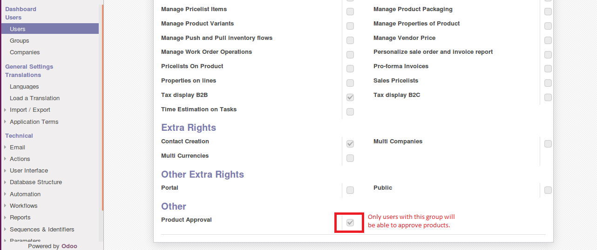
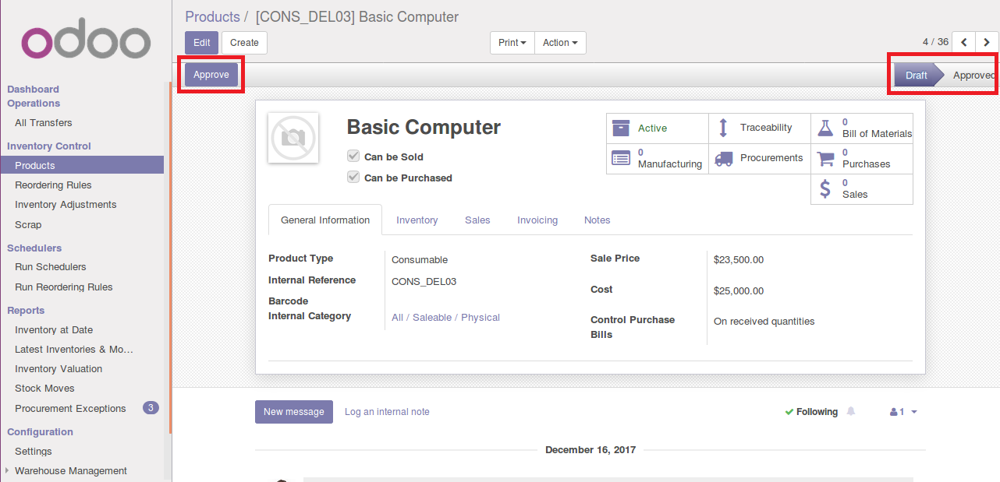
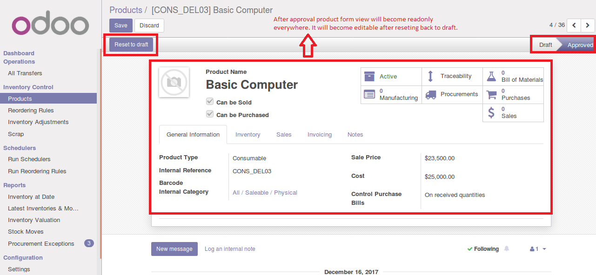

Product Workflow
Product workflow will make you able to get more control over inventory.

The user can approve and reset back to draft state.

After approval product form will be readonly. Product with approved state will only show in sale order and purchase order.
